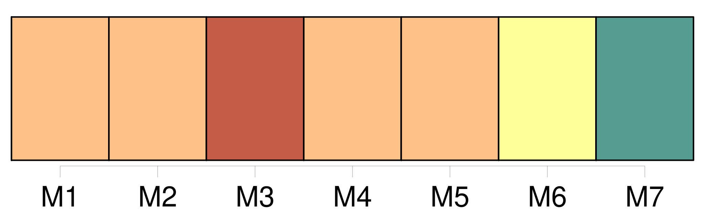
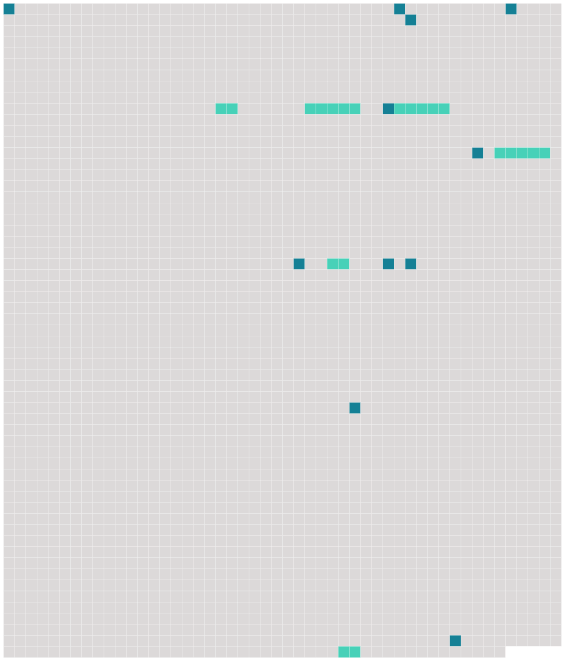

Longueur nb maillons : 17 mentions |
  |
[Ils] allaient par les chemins, au travers des champs labourés, qui sentaient bon et fort. [1 phrases]
Des corneilles énormes, posées de profil en travers de la route, [les] regardaient venir de loin et s’ envolaient lourdement à [leur] approche. [4 phrases] [Ils] s’ entendaient ensemble. [15 phrases]
Mais son cœur et celui du vieux se dilataient d’ orgueil au récit des actes héroïques, comme si c’ étaient [eux -mêmes] qui les avaient accomplis : car [le vieux et l’ enfant] étaient aussi [enfants] [l’ un que l’ autre] [4 phrases] [Ils] aimaient [l’ un et l’ autre] à revenir souvent sur la légende fabuleuse de ce conquérant corse qui avait pris l’ Europe. [16 phrases] [Ils] se taisaient [tous deux] , ruminant, [chacun] à [sa] façon, ces histoires admirables ; – à moins que, sur le chemin, grand-père ne rencontrât un de ses nobles clients, faisant une promenade. [28 phrases]
Ce fut une méchante affaire : le vieux était solennel et n’ admettait point la raillerie sur le respect qu’ on lui devait ; [ils] restèrent en froid pendant plus d’ une semaine. [58 phrases] Le paysan disait : « [Vous] voilà arrivés. [4 phrases] La voiture s’ éloignait : et [l’ on] se retrouvait à l’ entrée du petit chemin creux près du Rhin. |
 |
La ressource peut être téléchargée sur la page Ortolang
Si vous avez des questions ou vous voyez des erreurs, merci d'envoyer un mail à silvia.federzoni89@gmail.com
Site développé par S. Federzoni (contact)